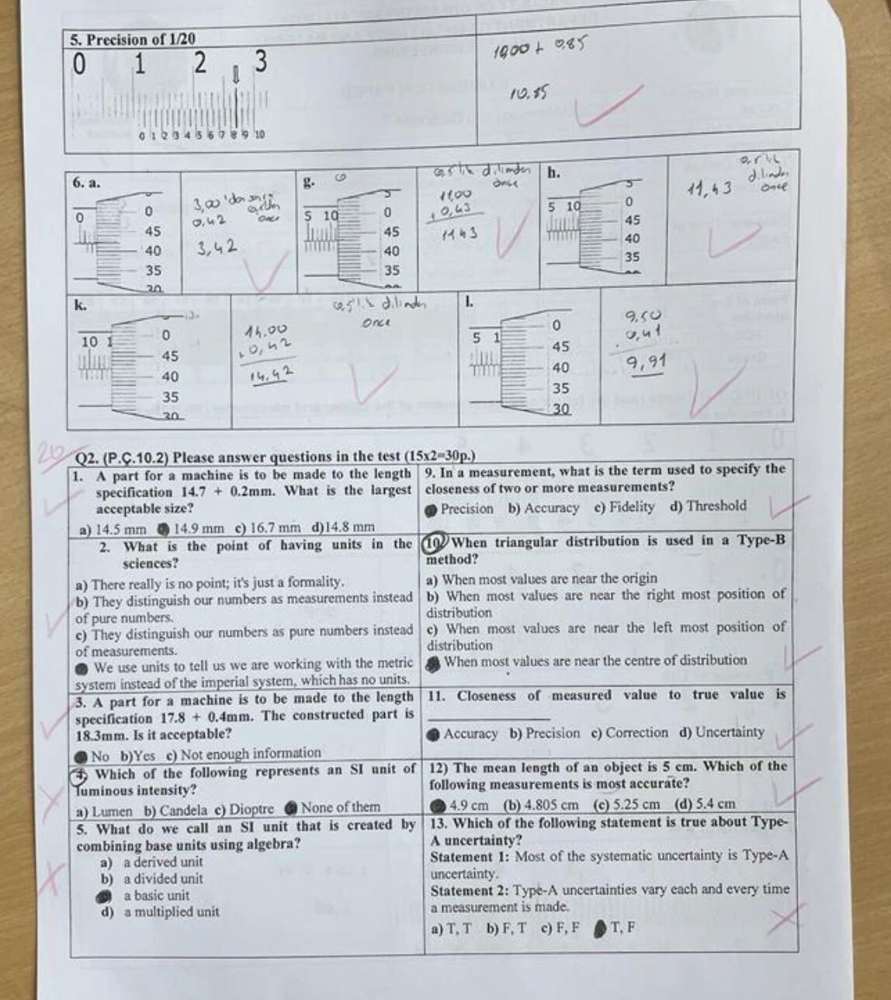
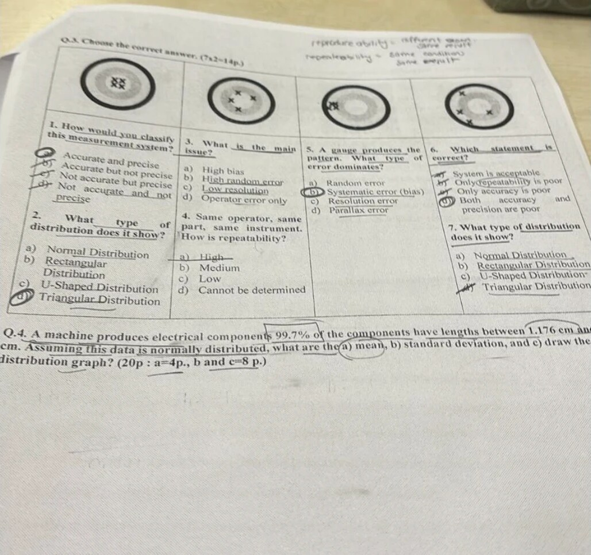
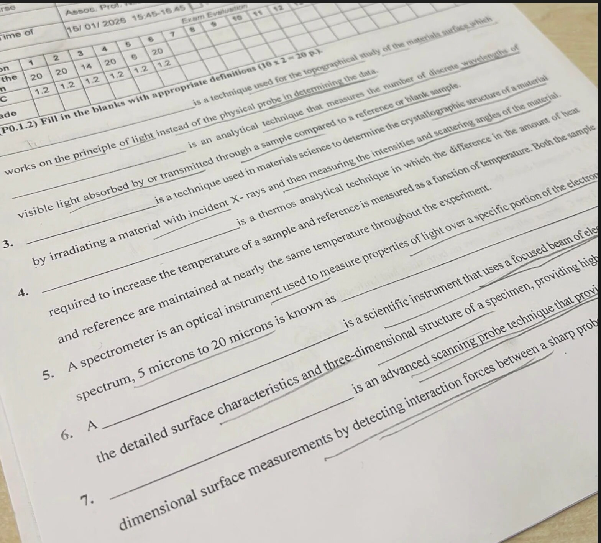
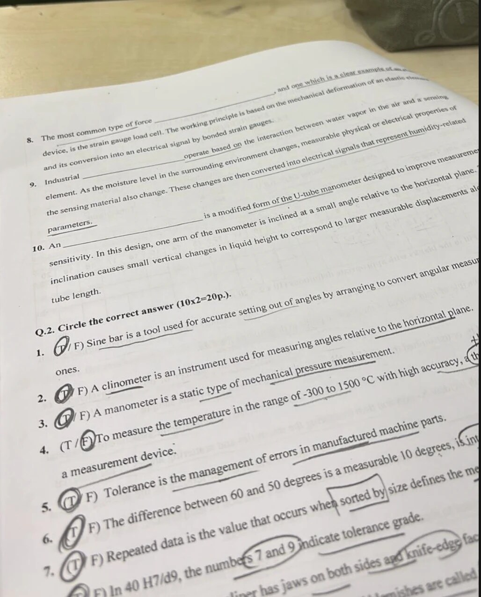

Vize kağıdı · sayfa 1 · Q1 ölçüm okuma + Q2 çoktan seçmeli
· yeşil = doğru cevap
· kırmızı = yanlış işaret

10 + 17×0.05 = 10.85 mm ✓
kovan 3 + tambur 42×0.01
11 + 43×0.01
11 + 43×0.01
14 + 42×0.01
9.5 + 41×0.01
→ b
→ b) Candela (cd)
→ a) derived unit
→ b) F, T (Type A = random etki, sistematik değil)
Vize kağıdı · sayfa 2 · Q3 hedef tahtası + Q4 normal dağılım
· yeşil = doğru cevap
· kırmızı = yanlış işaret

a ✓
b
c
b ✓
d ✓
b
d ✓
a) mean = (1.176 + 1.224) / 2 = 1.200 cm
b) %99.7 = ±3σ (toplam 6σ) → σ = (1.224 − 1.176) / 6 = 0.048 / 6 = 0.008 cm
c) çan eğrisi, tepe 1.200 cm:
1.176
-3σ
1.184
-2σ
1.192
-1σ
1.200
μ
1.208
+1σ
1.216
+2σ
1.224
+3σ
%68
%95
%99.7
Final · 15/01/2026 · sayfa 1 · boşluk doldurma 1–7 (1–2 numarası görünmüyor)
· yeşil = doğru cevap
· kırmızı = yanlış işaret

Optical profilometry
UV-Vis spectroscopy
X-ray diffraction (XRD)
DSC (differential scanning calorimetry)
Infrared (IR) region
SEM (scanning electron microscope)
AFM (atomic force microscopy)
Final · 15/01/2026 · sayfa 2 · boşluk doldurma 8–10 + doğru/yanlış
· yeşil = doğru cevap
· kırmızı = yanlış işaret

transducer (load cell)
humidity sensors
inclined manometer
T ✓
T ✓
T ✓
F ?
T ✓
T ✓
T ✓
T ✓